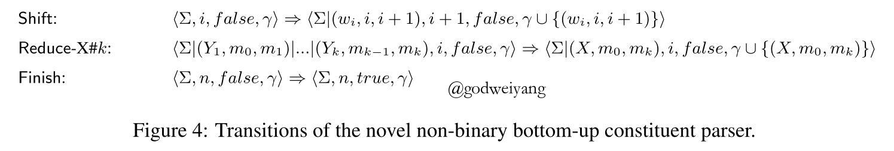
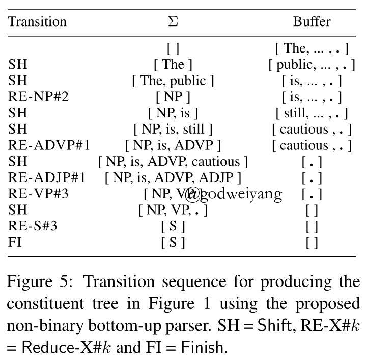
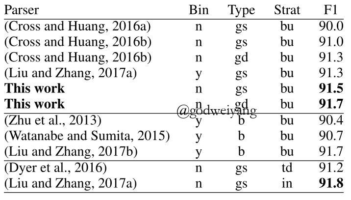

论文地址：Faster Shift-Reduce Constituent Parsing with a Non-Binary, Bottom-Up Strategy
介绍
这篇论文提出了一种非二叉化、自底向上的转移系统，并且针对它提出了一种Dynamic Oracle，用损失函数的形式来实现它。
之前的模型针对多叉树的处理都是采用head规则进行二叉化，或者采用空结点作为临时结点来进行隐式二叉化。但是本文将REDUCE动作扩展为REDUCE-k动作，从而可以对k叉树进行预测，这样减少了很多二叉树预测的中间过程，降低了模型的训练时间。并且为了提升准确率，还提出了一种用损失函数实现的Dynamic Oracle。
自底向上的转移系统就不详细介绍了，之前都已经介绍过了，这里只说明一下之后要用到的记号。
转移系统由一个stack和buffer组成，每个时刻的状态通常表示为$c = \left\langle {\sum ,i,f,\gamma} \right\rangle $，四个元素分别表示stack、buffer第一个单词的单词下标、分析结束标记、已经生成的短语成分的集合。
自底向上的转移系统
传统的转移系统REDUCE操作都只是将栈顶的两个元素归约为一个结点，而本文提出的转移系统将REDUCE扩展为REDUCE-X#k动作，归约栈顶概率最大的k个结点为结点X。举个例子，对于产生式$VP \to is \ ADVP \ ADJP$，使用的动作为REDUCE-VP#3，表示归约栈顶的三个结点。


具体的转移系统和例子如上图所示，为了区分具有不同数量儿子的结点X，将结点的label细化为X#k，表示具有k个儿子。例如对于VP结点，如果有两个儿子，那么它的label就是VP#2，如果有三个儿子就是VP#3。
Dynamic Oracle
本文采用的Dynamic Oracle是用损失函数来实现的，损失函数衡量的是状态c可以产生的最优句法树和标准句法树之间的距离，这样就可以计算出采取每一个动作之后下一个状态的损失函数值，选择损失函数值最小的动作。
对于状态c，损失函数$l(c)$定义为状态c可以产生的最终的句法树t和标准句法树$t_G$之间的最小汉明距离，即：
\[l(c) = \min_{t|c \to t} \mathcal{L}(t, t_G)\]
一个训练正确的Dynamic Oracle应当使得预测的下一个状态$\tau(c)$不会增加损失函数值，即
\[l(\tau(c)) - l(c) = 0\]
这个最小汉明损失可以定义为$\left| { {t_G}\backslash t} \right| + \left| {t\backslash {t_G}} \right|$，下面就将讨论这两部分怎么计算，主要用到短语的可达性和可分解性。
短语的可达性
在这里用短语集合${(X, l, r)}$来表示一棵句法树，我们假设状态c的短语集合为$\sum = [(Y_p, i_p, i_{p-1}) \cdots (Y_2, i_2, i_1)|(Y_1, i_1, j)]$，那么我们说，标准句法树中的一个短语$(X, l, r) \in \gamma_G$当且仅当满足如下三个条件之一时，称它是“各自可达短语”：
- $(X, l, r) \in \gamma_c$（因为短语已经包含在了状态c已生成的短语集合里，那么它当然是可达的）。
- $j \le l < r$（因为短语还在buffer中，所以可以通过不断SHIFT然后REDUCE得到）。
- $l \in \{i_k | 1 \le k \le p\} \wedge j \le r$（这种情况表明了短语的左端点恰好位于栈里某个短语的边界处，而右端点又还在buffer里，所以还可以通过不断SHUFT然后REDUCE得到短语。但是如果左端点不是栈里短语的边界，那说明产生了交叉，自然不会可达了。而如果右端点已经在栈里了，那之后也不会得到了，因为转移系统每次都是REDUCE栈顶的短语，不可能从栈里面开始REDUCE的）。
枚举标准树中的所有短语，根据以上规则可以得到可达短语集合$\mathcal{R}(c, \gamma_G)$，然后从标准短语集合中排除掉这部分短语，剩下的就是不可达短语集合$\mathcal{U}(c, \gamma_G) = \gamma_G \backslash \mathcal{R}(c, \gamma_G)$。这部分短语就是不论采取何种动作序列，最后都不可能生成的短语集合。
损失函数
对于每一个状态c，可以定义它的损失函数为
\[l(c) = \min_{\gamma |c \to \gamma} \mathcal{L}(\gamma, \gamma_G) = \left| { \mathcal{U}(c, \gamma_G)} \right| + \left| {\gamma_c \backslash {\gamma_G}} \right|\]
其中第一个因子惩罚的是False Negative短语，也就是漏报的短语，即正确的但是不可能被生成的短语。第二个因子惩罚的是False Positive短语，也就是误报的短语，即已经生成的但是是错的短语。
正确性证明
那么我们如何证明，按照这个最小的损失函数值走下去，一定能得到最优的句法树呢？也就是要证明，这个状态c的损失函数，的确就是从状态c能得到的最优句法树和标准树的汉明损失。
\[\min_{\gamma |c \to \gamma} \mathcal{L}(\gamma, \gamma_G) = \left| { \mathcal{U}(c, \gamma_G)} \right| + \left| {\gamma_c \backslash {\gamma_G}} \right|\]
首先证明这个损失函数是短语可分解的，也就是证明，对于一个标准树中的短语集合，如果其中的每一个短语都是各自可达的，那么整个集合中的短语可以同时生成。
证明这个性质要用到数学归纳法。首先$m = 1$时显然成立，然后假设集合元素个数为$m, (m > 1)$时性质成立，下面证明集合T元素个数为$m + 1$时性质也成立。
令$(X, l, r)$表示集合T中偏序最小的短语，即l是最小的，如果l有相等的，就再取r最小的。根据假设，$(X, l, r)$是从状态c可到达的gold短语。令$T’ = T \backslash (X, l, r)$，所以集合T’有m个元素，根据递归定义，整个集合都是从状态c可达的。
如果短语的可达性条件中第一种情况满足，那么$(X, l, r)$已经存在于状态c已生成短语集合中了，那么整个T集合当然是可达的。
如果第二种情况满足，即$j \le l < r$，那么可以通过不断SHIFT再一个REDUCE来得到短语$(X, l, r)$。那么T’集合又如何能全部生成呢？可以发现T’集合中的短语，要么是左边界等于l并且右边界大于r的（根据定义），这种可以继续SHUFT再REDUCE得到（满足条件3）。要么是左边界大于等于r的（因为都是标准树中的短语，所以不会有边界交叉），这种满足条件2，也可达。论文中就说了这两种情况，是否还存在一种左边界大于等于l，右边界小于等于r的情况呢？当然这种情况满足条件1，因为在生成$(X, l, r)$的时候就已经生成了。所以最终T集合还是全部可达的。
如果第三种情况满足，即l是栈里某个短语的边界，而r大于等于j，那么这种情况依然可以通过不断SHIFT再REDUCE得到，而T集合仍然可以全部可达，原因和上一种情况类似。
所以可以证得，从状态c开始，存在某个转移序列，使得所有可达短语全部生成，那么只有不可达的短语会被错过，即：
\[\min_{\gamma |c \to \gamma} \left| {\gamma_G \backslash {\gamma}} \right| = \left| { \mathcal{U}(c, \gamma_G)} \right|\]
最后一步就是证明另一项$\left| {\gamma \backslash {\gamma_G}} \right|$等于$\left| {\gamma_c \backslash {\gamma_G}} \right|$。首先因为前者肯定包含了后者，因为随着转移的进行，预测错误的短语只会增加，不会减少。然后证明最优句法树不会再增加新的错误短语，即从状态c开始的最优句法树一定是$\mathcal{R}(c, \gamma_G) \cup \left| {\gamma_c \backslash {\gamma_G}} \right|$。这里不是很好想，可以想象从包含当前栈顶短语的最小的标准短语开始，一步步的进行转移，按照James and Huang中的Dynamic Oracle。
至此已经证明了，这个损失函数可以保证每一步都按照最优的策略来进行转移。
实验
实验采用的转移模型都是基于Dyer et al.，并且也采用了James and Huang中的exploration策略来增加错误状态，提高Dynamic Oracle的准确率。
在PTB上的实验结果如下：

结果其实也不是很高，现在来看算低的了，本文只和其他的转移系统结果进行了比较，可以说在转移系统上还算比较高的吧，虽然今年转移系统也做到了92.0了。在运行速度上，本文的模型也比其他转移系统略有提升，我感觉虽然不需要二叉化了，但是REDUCE#k动作的增加同样会增加复杂度，这是自底向上转移系统的一个固有的问题。
总结
本文提出了一个非二叉化的自底向上的转移系统，主要有如下几个贡献点吧：
- 非二叉化预测，采用REDUCE#k动作。
- 采用损失函数来实现Dynamic Oracle。
- 准确率上超过了除了in-order的大多数转移系统。
- 训练速度上是所有转移系统中最快的。
看完这篇，我准备在chart-based的top-down模型上面也搞一个这种Dynamic Oracle试试，需要改变的就是每个状态的损失函数，现在的F1还只有91.87，希望能有所突破吧。